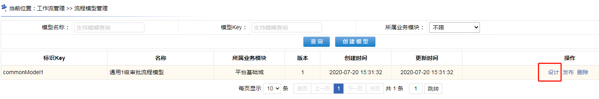
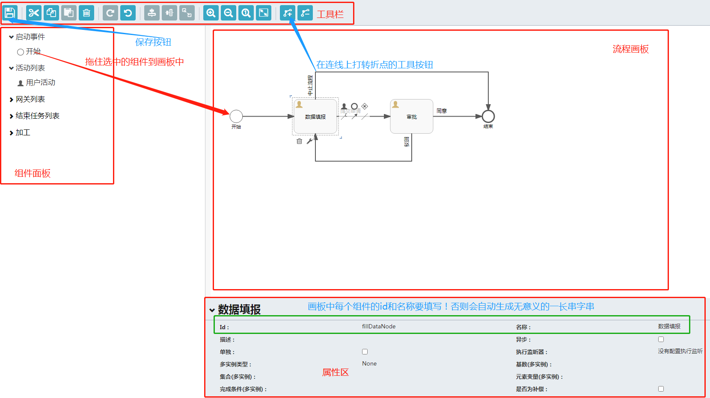

点“确定”保存后，将新建一个模型，此时模型的流程图还没设计，需要进一步处理。

点击“设计”后，会弹出流程图设计页面，设计流程的操作，与edk可视化ide设计业务流程图的操作类似，只是需要“长按”将组件“拖到面板”，或者点击某个具体的节点，在可选弹出框中“点一下”生成下一步节点
~~~~~~~~~~~~~~~~~~~~~~~~~~~~~~~~~~~~~~华丽的分割线~~~~~~~~~~~~~~~~~~~~~~~~~~~~~~~~~~~~~~~~~

~~~~~~~~~~~~~~~~~~~~~~~~~~~~~~~~~~~~~~华丽的分割线~~~~~~~~~~~~~~~~~~~~~~~~~~~~~~~~~~~~~~~~~

~~~~~~~~~~~~~~~~~~~~~~~~~~~~~~~~~~~~~~华丽的分割线~~~~~~~~~~~~~~~~~~~~~~~~~~~~~~~~~~~~~~~~~